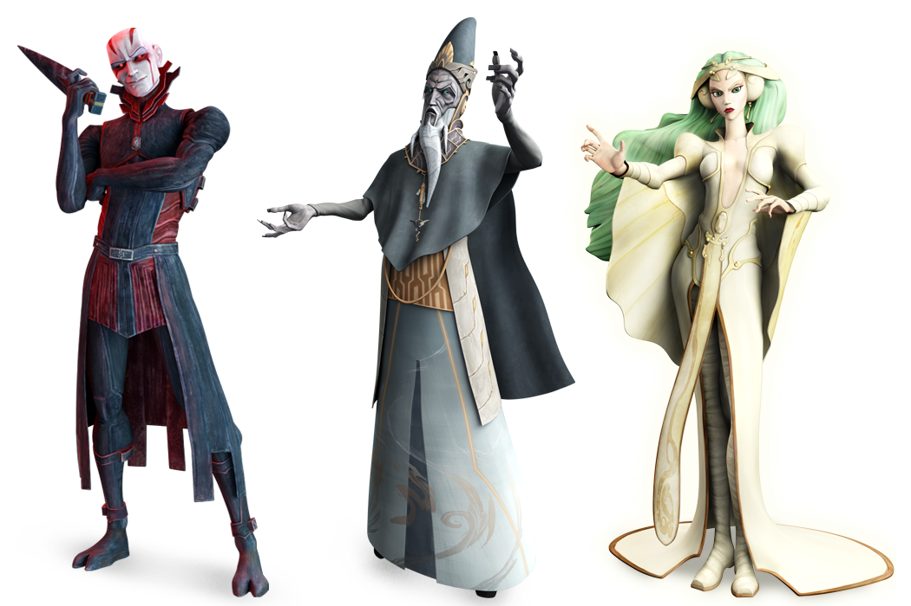

You have chosen neither of the options such as light side or dark side. You are balancing them both
Very known force users are following a code, combined with the sith and jedi
There must be both dark and light. I will do what I must to keep the balance, as the balance is what holds all life. There is no good without evil, but evil must not be allowed to flourish. There is passion, yet peace; serenity, yet emotion; chaos, yet order. I am a wielder of the flame; a champion of balance. I am a guardian of life. I am a Gray Jedi
